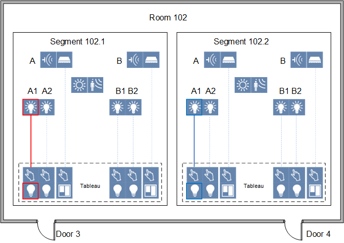
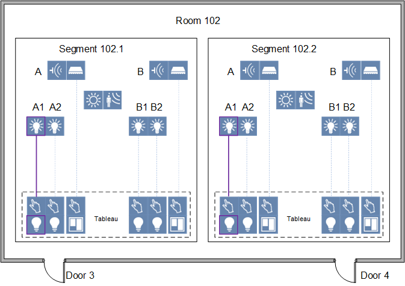
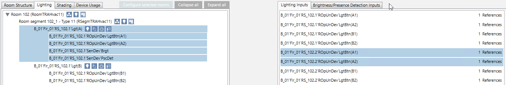
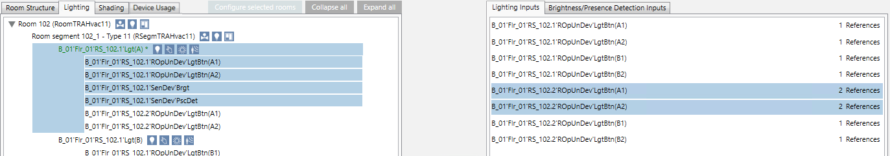
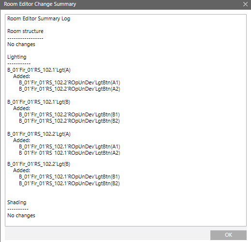
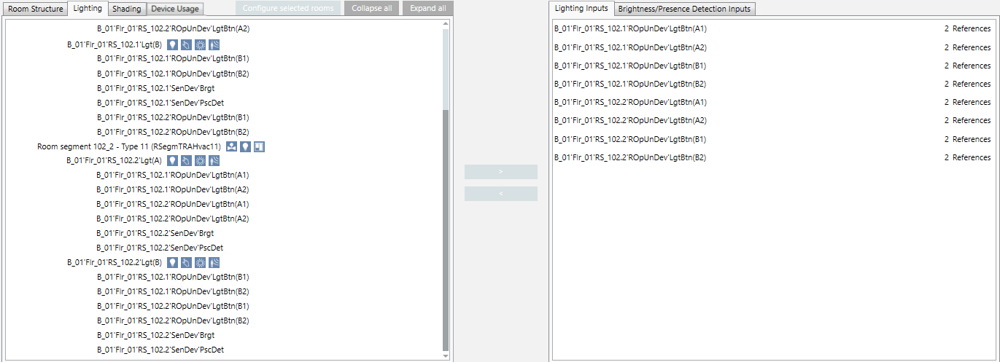

Reconfigure Lighting Control
Scenario: You have a room with 2 segments. Two switches (panels) are available for each door in this room, but they can only control one room segment. But you can only control one lighting A1 from this switch. However, you want to be able to turn the lighting on and off for the entire room from both doors. To do this, you must link door 3 (red) and door 4 (blue) as well link door 4 (blue) and door 3 (red). After linking, you can switch lighting A1 (purple) from door 3 and door 4. This must occur for each of the four switches and in both directions. Any brightness and presence detectors must also be linked as per the new requirements.
Lighting control is only possible at the corresponding door | Lighting control in parallel from door 3 and door 4 is possible |
 |  |
- The preconditions are met.
- You made a Backup copy of the existing configuration. You can use this export file to restore the last saved configuration with Import.
- Select Project > [Network name] > [Building] > [Floor].
- Select the room.
- Drag the room to the room information list.

- Select the Lighting tab.
- Highlight the pane RS_102.1‘Lgt(A) in the segment.

- Select the Lighting inputs tab in the assignment list.
- Highlight lighting inputs RS_102.2’ROpUnDev‘LgtBtn(A1) and Lgt RS_102.2’ROpUnDev‘LgtBtn(A2). Note that you must perform the assignment in both directions (from segment 1 to segment 2 and from segment 2 to segment 1).
- Click or drop the lighting inputs to the lighting output.
- The lighting inputs are assigned. The edited entry is now highlighted in green and with an asterisk *.

NOTE: You can Undo last operation until the changed configuration is saved.
until the changed configuration is saved. - Repeat steps 5 to 8 for panes RS_102.1‘Lgt(B), RS_102.2‘Lgt(A) and RS_102.2‘Lgt(B).
- Click Save
 .
.
NOTE: It may take a several minutes to enable the changes. BACnet communication is no affected during this time. 
You cannot undo a saved configuration. You must have a Backup copy to restore a saved configuration.
- (Optional) Click Summary Log to display the changes.

- Each lighting input has 2 references in the assignment list.
- The new configuration is written to the automation station.
